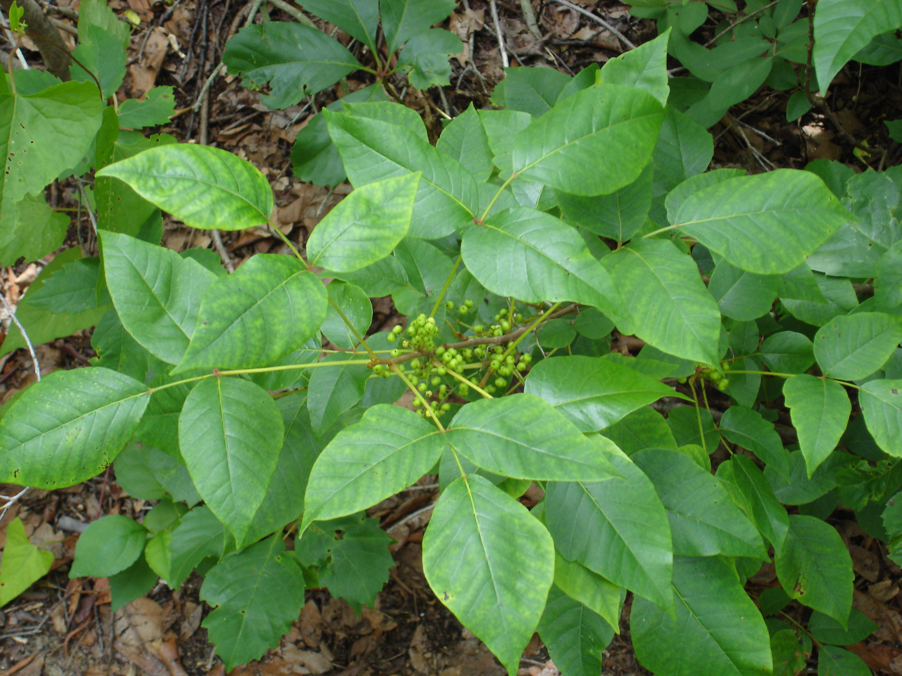

Dangerous Plants and Animals
We are all extremely familiar with the squirrels and deer of Maryland, but what other wild animals can you run into within our forests? More importantly, are there any creatures in our wilderness that are an actual threat? These are great questions to ask before going on a trip, as the answer can completely change how you should prepare.
According to Maryland’s Department of Natural Resources,1 Maryland’s wildlife population includes coyotes and black bears, both of which have the capability to harm humans. However, neither of these animals are known to actively target humans, and in most cases will simply be scared away from an unexpected encounter. The Humane Society reports that there have only been two deaths caused by coyotes in the United States and Canada, and that the most dangerous situation most people could face is a coyote infected with rabies. As with any rabid animal, in this situation it is imperative to keep distance and avoid a transfer of the animal’s saliva to any open wounds. If you are bitten by a rabid animal, seek medical attention immediately, as rabies is fatal without treatment. According to the Humane Society,2 treatment shortly after contact is 100% effective at curing the disease.
If you are exploring western Maryland, black bears are a common sight. Maryland’s Department of Natural Resources3 advises anyone who comes into contact with a black bear to simply leave the area in a calm manner. If a bear approaches your campgrounds, the department makes it clear, “DON’T FEED IT!” The department elaborates further, explaining that it is illegal to feed bears in Maryland, and doing so only makes the bear more likely to approach humans in the future. They add that the proper reaction to a bear entering your campgrounds is to make yourself as large and loud as possible, and as a last resort, use “spray repellents containing capsaicin” to drive it away. It is important to maintain a pathway for the bear to leave through, or it may feel threatened and become more aggressive. Above all, remember to stay calm and that bears are most likely more afraid of you than you are of them.
Surprisingly, some of the most common irritations and dangers you’ll face on the trail are ones that you cannot easily see: mosquitoes, poison ivy, and ticks. Mosquitoes and ticks are insects which feed on the blood of other organisms, and can carry diseases which humans are susceptible to. Maryland contains four types of tick: the wood tick, brown dog tick, deer tick, and lone star tick. To avoid ticks, stay away from tall grass and other overgrown areas, and wear clothing which fully covers your body.4 It is a good practice to routinely check yourself for ticks as you hike, so that you can easily remove them before they become attached. According to the CDC, ticks can transmit Lyme disease and Rocky Mountain spotted fever,5 among other illnesses. Similarly, mosquitoes are known transmit West Nile virus6 within North America. Avoiding mosquito bites can be done by hiking during colder months, applying mosquito repellant, and wearing clothes to cover exposed skin.
Poison ivy, while not a serious threat to your health, is another common annoyance in the woods. The National Park Service identifies the plant by its three-leaf pattern, adding that “in early summer, yellowish or greenish flowers with five petals appear and develop into small round off-white fruits by fall. The leaves also turn red in fall.”7 Avoiding contact to the oil produced by the plant is the best way to prevent a rash or blisters from developing. The NPS adds, “If you've been exposed to poison ivy, wash with soap and cool running water, preferably within an hour after exposure.”